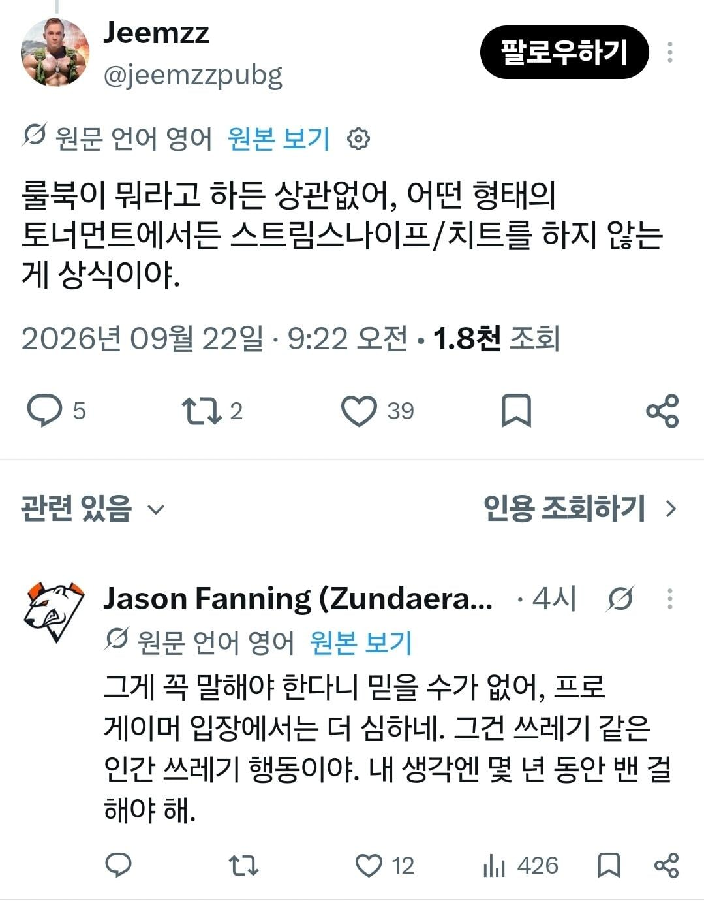
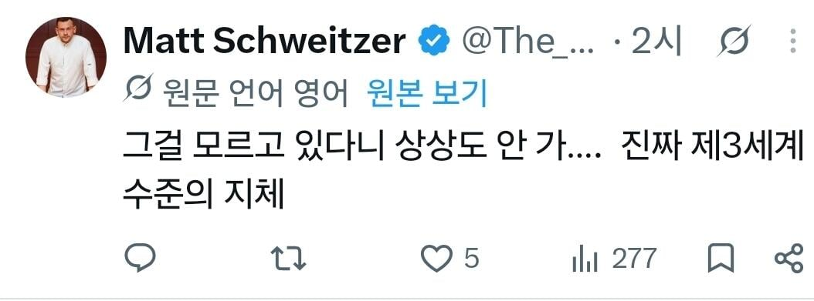

'상식' 이잖아...?


'상식' 이잖아...?
허구헌날 개미알밥이나 처먹으니 개미가 뇌를 파먹어서 저러나
개웃기네 ㅋㅋㅋㅋ 개미알밥좀 잘 익혀먹었어야지! 체하지 않게 천천히 먹어야지 코로 들어가버린거냐고!
내가 게임하면서 겪은 경험에 의하면 응우옌 이 씹년들 핵농도는 참깨 바로 다음급임 양심이란게 없음
월드오브탱크라는 게임 클랜전하면서 핵쓰는거 제일 많이걸린게 응우옌들이었음 심지어 클랜단위로 날아간 병1신련들도 있음 글로벌게임에서 응우옌들은 그냥 참깨랑 동급임 ㄹㅇ로
베트콩 씹새끼들ㅋㅋ 클전 할때 일부러 한두대 빼서 나무랑 잔해 존나 뿌시면 무조건 거기로 주력 들어옴 병신들ㅋㅋ
사고 방식이 남다르게 법 피하는 잡놈 새끼들도 쇠고랑 채우면 "재수없네 씨발" 이러면서 지가 법망을 못 피했다고 은연중 직감하지. 근데 "니들이 하지 마라고 안 가르쳐줬으니까 그냥 했을 뿐인데 뭐가 문제냐" 이러는 건 씨발 그냥 테이저건 마렵네
겜 회사 다님. 일단 게임 성격에 따라 다르긴 한데 과금력이 뒷받침되어야 하는 게임은 말만 이스포츠고 사실상 VIP케어의 성격이 커서 어뷰징이나 매크로 쓰는 유저들을 적극적으로 벤하기는 힘듦. 반대로 롤이나 배그처럼 게임성 하나로 승부보면서 p2w요소가 없거나 적은 게임은 저런거에 매우 민감하게 대응해야함. 일단 이건 운영측 인사이트고, 국가별 성향이 똑같이 치팅을 하더라도 서양 쪽은 좀 쉬쉬하는 분위기인데 중국 베트남은 좀 대놓고 하는 느낌이 있음. 이게 뭐가 잘못이냐는 스탠스를 취하는 경우도 있고. 다만 미주지역이나 유럽애들은 깨끗하냐라고 물어본다면 절대 아님 ㅋㅋㅋ
상대한테 사람 보내서 랜뽑해도 된다는거 아니냐
대한민국은 베트남의 발전이 두렵습니까?
얘네들 특징이 지가 잘 못 했어도 사람들 다 보는데서 고로시 주면 역으로 존나 성질냄.
이 사건으로 베트남인들 수준을 알아버렸음 상식적인 대화를 시도하지 말아야할것